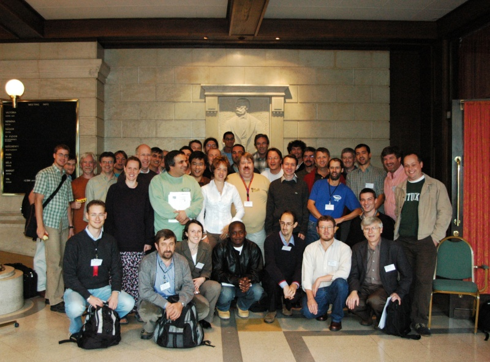

<!DOCTYPE HTML PUBLIC "-//W3C//DTD HTML 4.0 Frameset//EN">

<!--Converted with LaTeX2HTML 2K.1beta (1.61)
original version by:  Nikos Drakos, CBLU, University of Leeds
* revised and updated by:  Marcus Hennecke, Ross Moore, Herb Swan
* with significant contributions from:
  Jens Lippmann, Marek Rouchal, Martin Wilck and others -->
<HTML>
<HEAD>
<TITLE>Resources from the Workshop</TITLE>
<META HTTP-EQUIV="Content-Type" CONTENT="text/html; charset=iso-8859-1">
<META HTTP-EQUIV="Content-Style-Type" CONTENT="text/css">

<META NAME="Robots" CONTENT="nofollow">
<META NAME="Generator" CONTENT="LaTeX2HTML v2K.1beta">
<META HTTP-EQUIV="Content-Style-Type" CONTENT="text/css">
</HEAD>
<FRAMESET ROWS="36,*">
<FRAME SRC="Resources_from_Workshop_hd.html" SCROLLING="no" FRAMEBORDER=0 MARGINHEIGHT=0 MARGINWIDTH=0>
<FRAME SRC="Resources_from_Workshop_ct.html" NAME="contents" SCROLLING="auto" FRAMEBORDER=1 MARGINHEIGHT=3 MARGINWIDTH=5>

<NOFRAMES>
<BODY bgcolor="#ffffff" text="#000000" link="#9944EE" vlink="#0000ff" alink="#00ff00">

<!--Navigation Panel-->
<A NAME="tex2html289" HREF="Location_mn.html" TARGET="_top">
</A>
<A NAME="tex2html285" HREF="home_mn.html" TARGET="_top">
</A>
<A NAME="tex2html279" HREF="Journal_Special_Issue_mn.html" TARGET="_top">
</A>
<A NAME="tex2html287" HREF="Resources_from_Workshop_tf.html" TARGET="_top">
</A>  <A NAME="tex2html7" HREF="home.html" TARGET="_top"></A>
<BR>
<B> Next:</B> <A NAME="tex2html290" HREF="Location_mn.html" TARGET="_top">Location</A>
<B> Up:</B> <A NAME="tex2html286" HREF="home_mn.html" TARGET="_top">Call for Papers SCAM</A>
<B> Previous:</B> <A NAME="tex2html280" HREF="Journal_Special_Issue_mn.html" TARGET="_top">Journal Special Issue</A>
 &nbsp <B>  <A NAME="tex2html288" HREF="Resources_from_Workshop_tf.html" TARGET="_top">Contents</A></B>
<BR>
<BR>

<H1><A NAME="SECTION00030000000000000000">
Resources from the Workshop</A>
</H1>

<P>
This section will contain resources and outputs from the workshop

<h4>Slides from the workshop</h4>
<p><a href="slides/index.html" >Here</a> are the scanned images of the slides that people made and put up to explain points during the workshop.

<P>
<H4>Group Photo</H4>
<p>
<DIV ALIGN="CENTER">

</DIV>

<HR>
<ADDRESS>
Mark Harman, Department of Computer Science, King's College London, Strand, London WC2R 2LS.
</ADDRESS>
</NOFRAMES></FRAMESET>
</HTML>
